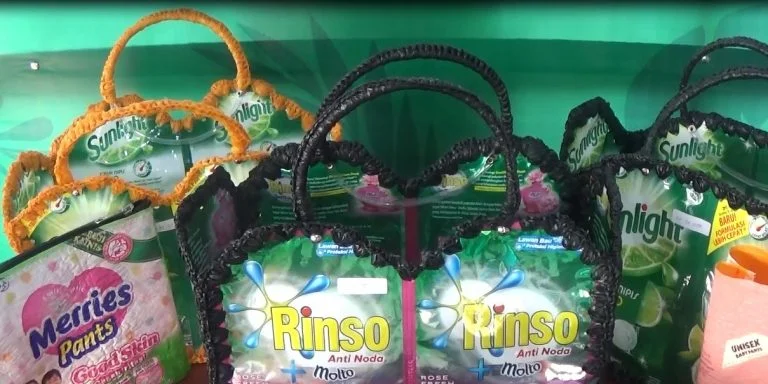

Cara Membuat Tas Belanja dari bekas kantong sabun

Bahan Yang Diperlukan
Cara Membuat Tas Belanja dari bekas kantong sabun
Kain lap untuk membersihkan plastik bekas kemasan.
Benang untuk menjahit beberapa bagian tas plastik.
Gnting
Kain polos
Furing
Ritsleting (opsional)
Cara Membuat
- Jika semua alat dan bahan sudah siap, Anda bisa mulai membersihkan plastik bekas kemasan Rinso.
Bersihkan seluruh bagian dalamnya dengan kain lap lalu jemur sebentar di bawah sinar matahari. Sebaiknya
Anda melakukan langkah ini dengan hati-hati agar plastik kemasan tersebut tidak mudah kusut.
- Plastik kemasan yang sudah dijemur sampai kering bisa langsung dipotong menjadi dua bagian. Kemudian,
buatlah lipatan sejauh 3 cm pada ujung atas dan ujung bawah kemasan tersebut. Guntinglah lipatan-lipatan
sebesar 3 cm untuk mendapatkan helai-helai plastik kecil. Anda bisa membuat 500 lipatan dari 50 bungkus
plastik kemasan Rinso.
- Cara membuat kerajinan dari plastik deterjen selanjutnya yang patut Anda lakukan adalah menganyam
potongan-potongan plastik yang sudah dipotong-potong. Anyamlah potongan tersebut hingga bentuknya
menyerupai baling-baling. Ujung anyaman harus berbentuk vertikal untuk mempermudah proses
penggabungannya. Lakukan proses penganyaman sampai Anda mendapatkan jumlah anyaman yang cukup banyak.
- Anyaman-anyaman plastik yang sudah rapi tinggal disambungkan satu sama lain. Anda tinggal menyelipkan
anyaman pada bagian vertikal anyaman lainnya. Proses ini harus dilakukan terus-menerus hingga anyaman
berbentuk melingkar seperti kantung.
- Jika tas plastik sudah terbentuk sempurna, maka Anda bisa melanjutkan prosesnya dengan membuat tali tas.
Manfaatkan sisa lipatan plastik yang sudah dianyam untuk membuat bentuk segitiga. Kemudian, hubungkan
ujung segitiga dengan segitiga lainnya agar saling mengunci dan membentuk tali panjang.
- Anda bebas menentukan panjang tali sesuai kebutuhan dan selera. Tali plastik yang sudah jadi bisa segera
dijahit pada kedua ujung tas plastik. Pastikan bahwa jahitannya benar-benar kuat supaya tali tas tidak
mudah sobek.
- Langkah terakhir dalam cara membuat kerajinan dari plastik deterjen berbentuk tas adalah melapisi bagian
dalam tas dengan furing. Penggunaan furing akan membuat tas plastik lebih kuat karena terdiri dari
lapisan ganda. Usahakan untuk memilih furing yang warnanya senada dengan plastik kemasan Rinso supaya
tampak lebih eye catching. Anda juga bisa menambahkan ritsleting supaya tas dapat ditutup dengan
sempurna.